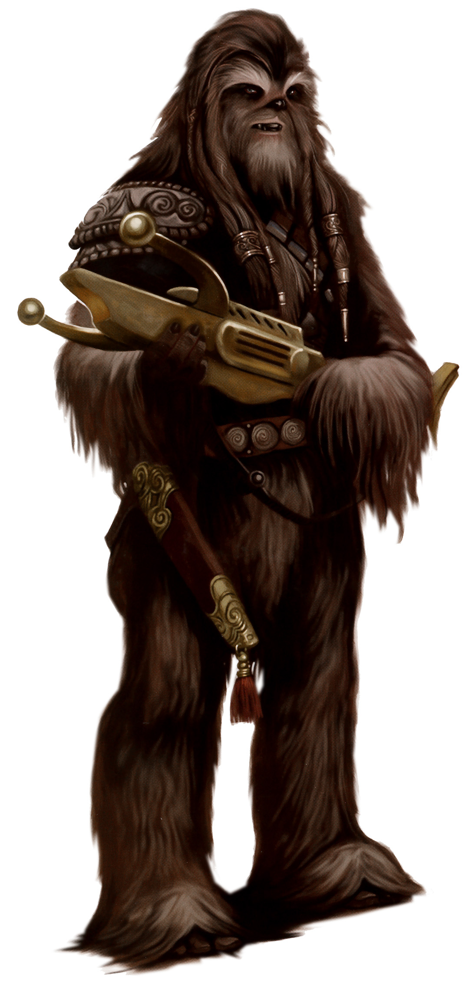

Wookiee
wookiee
Special Abilities: Wookiees begin the game with one rank in Brawl. They still may not train Brawl above rank 2 during character creation.
Wookiee Rage: When a Wookiee has suffered any wounds, he deals + 1 damage to Brawl and Melee attacks. When a Wookiee is Critically Injured, he instead deals + 2 damage to Brawl and Melee attacks.
Strong, intelligent, and fierce in battle, Wookiees make the best of friends for those to whom they are loyal—and the worst of enemies for anyone to whom they are not. Unfortunately, Wookiees have virtually disappeared from the population at large and are becoming a faded memory of the Old Republic.
Averaging over two meters in height, Wookiees strike fear into the hearts of their opponents because of their sheer size. There is good reason to be scared; few other species in the galaxy match either the strength of a Wookiee or the depths of a Wookiee's temper. Their limbs are long, with retractable claws on their fingers and toes for the arboreal environment of their homeworld. These claws are only used for climbing, never for combat, as such an act is seen as dishonorable in Wookiee culture. Their fur grows in a variety of colors, becoming darker in middle age and then graying or whitening in later years (Wookiees can live for centuries)
Although their physique makes for an intimidating appearance, Wookiees live by strict codes of honor and loyalty. Friendship and family bonds knit Wookiees tightly together, for there are dangers on Kashyyyk that frighten even the most ferocious Wookiee. Kilometers-tall wroshyr trees cover nearly half of Kashyyyk's surface, defining the world's unique ecology and serving as homes for most Wookiee communities. On the seventh level of these forests, Wookiees have built immense cities in the trees, blending technology in harmony with the environment. Mechanical skills and engineering come naturally to the Wookiees
Having dominated much of Kashyyyk's upper levels, the Wookiees were on the path to explore the stars on their own when a neighboring species, the Trandoshans, arrived on Kashyyyk to colonize and exploit the world. Even though the Trandoshans had more advanced weaponry, the Wookiees fought the would-be colonizers off the planet. The Wookiees wasted no time in disassembling the technology Trandoshans left behind. This included a starship with sublight engines. When the Trandoshans returned, the Wookiees drove them away for a second time, then took flight to the stars.
The Wookiee-Trandoshan wars continued in spats throughout the later years of the Old Republic, with the Republic mediators usually siding with the honorable Wookiees. The Trandoshans saw an opportunity, however, when Palpatine declared his Empire. They sent emissaries to Palpatine to recount their grievances against the Wookiees. The Imperials heeded Trandoshan advice and placed the cantankerous Wookiees in labor camps. Wookiee children were held at gunpoint unless Wookiee adults used their technical expertise to build Imperial war material, which included parts of the Death Stars.
Wookiees hail from the forest world of Kashyyyk. This world is dominated by immense old-growth forests, including the kilometers-tall wroshyr trees. These trees form a layered ecology on Kashyyyk, with the uppermost levels being the safest. The deeper one travels into the Kashyyyk forests, the more dangerous flora and fauna one finds. At the lowest depths, even a Wookiee cannot survive for long.
Shyriiwook, the Wookiee tongue, continues to amaze scholars with the incredible nuances of grunts and growls that form the language. Few non-Wookiees can speak it or its dialects, like Xaczik, spoken by the Wookiees of the Wartaki Islands. Conversely, Wookiee physiology prevents them from speaking the languages of other species, including Basic, though most Wookiees have no problem comprehending them.
A free Wookiee in the Imperial era is usually a Wookiee with a bounty on his head. Few will bother to bring that point up, knowing it better to please a Wookiee than anger him. Those Wookiees who do not slave away in the Empire's labor camps can be found in all careers that mix danger, technology, and exploration. Bounty hunting is one profession that Wookiees find detestable, though a couple of rogues, such as Snoova, have taken that route.
When Wookiees pledge their protection to an individual, they honor that pledge until death. These pledges usually incorporate a Wookiee's immediate family, but can include friends and compatriots who have done extraordinary acts for the Wookiee, such as saving his life or the lives of his family members. When such an act is performed, a Wookiee's honor code places the Wookiee in a "life debt," which means that nothing can repay the Wookiee's friend for his act except the giving of the Wookiee's own life.